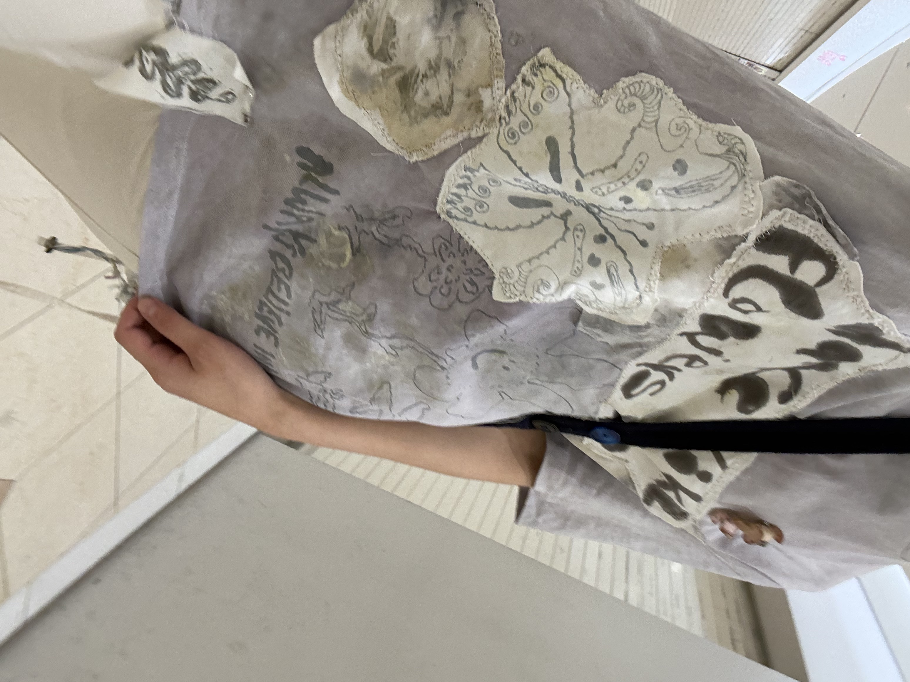
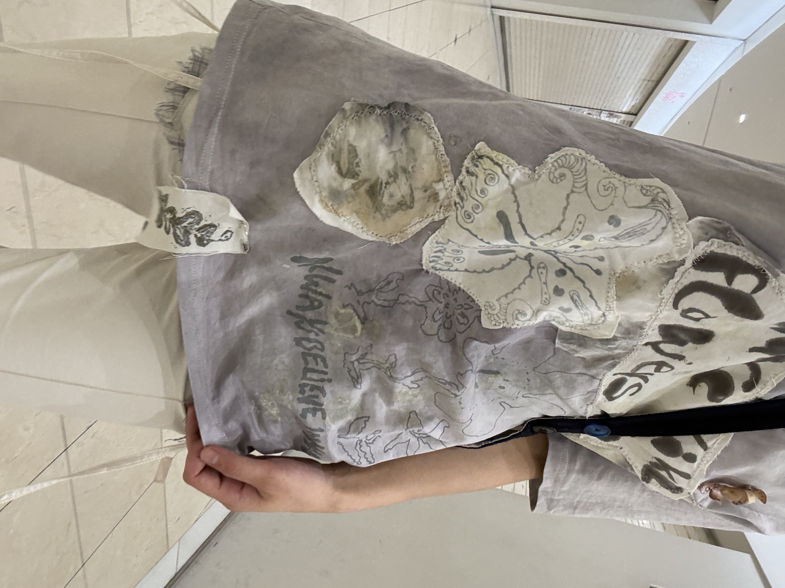

１日目
大阪にいってきた
好きな芸人の主催ライブと、シスターフッド書店Kaninにいこうと
新幹線をとったけど、結局二日間とも大阪にいた
新大阪駅でぴちょんくんにご挨拶してマヅラへ向かった
梅田むずい
ディアモール大阪を目指したら
だいぶスムーズに到着できることがわかった
旅行先でいつもみたいなことをするのが好きだから
今回は美容室を予約してみた
それとふたつのお笑いライブへ行く予定しか決まってないから
2日間の計画を立てることにした
そこで大阪の多くは水曜日休みであることに気づく
なんとなくわかってたけど、
いきたいマップのほぼすべてが定休日でおわりでした
映画をみようかと思ったけど、時間がうまくいかない
エドワードヤンの海辺の一日って3時間くらいあるんだね
そんなことを考えているうちに明日京都に行くとしたら
opaltimesのグループ展とNEW PURE +の展示に行けないことが
悲しくなってきた
ああ、あしたも大阪にいよう、って思った
マヅラでは伝説のビーフンとカフェオレを頼んだ
変な組み合わせのひとだな、と思われるかなと思ったけど
どっちも好きだからいっしょにたべた
そのあとは中之島の旧ヤム邸へ行った
ビーフンがまだおなかに残っていた
そういえば前に中津でビリヤニを食べた時もそうだった
お腹いっぱいで苦しいなんて、なんて幸せなことなんだろうと思うけど
つらかった
ほんとうにつらかった
デザートのちっちゃなマスカルポーネ？を食べたらすこしおなかが空いた
このあとのライブのことを考えたら空腹フィーバータイムみたいなのきておかしかった
美容室
すごく好きな短さになってハッピー
大阪のおいしいエスニック料理屋さんを山ほど教えてもらう時間があった
ほんとうにありがとうございますと思った
ライブ①
入学卒業のことを翔ライブで見る夢が叶ってうれしかった
ゲラな人が横にいると安心する
わたしはあんまりうまく笑えないから
どんちっち相当おもしろかった
余韻に浸って駅までの道を歩いていたら
急に後ろ頭をぶん殴られた、とおもった
正直なにかよくわからなかった 後頭部を触ったけど血は出ていなかった
横を見たらカラスがちょうど木に止まってわたしのことを見ていた
事実はわたしのうしろを歩いていた人しかわからないと思うけど、
たぶんカラスがわたしの頭をガシッ、とした
この頃わたしは何かにぶつかったり、ぶつかられることが多い
にしてもカラスか、と思った
わたしはただ歩いていただけなんだけど
ちょっと調べたら今は繁殖期だから巣を守ろうとしたりして
攻撃的だというようなことが書かれていた
そうなのかな
わたしが巣を攻撃しようとしたと思ったならごめんと思った
森ノ宮の森のなかを歩くのはもうやめようと思った
頭がずっと痛かった
なんば方面へゆく
お笑いを見に行く予定がなければ降りたくない街
オタロードあたり
なんかここあたりにくると
わたしはいまどこにいるんだろう、という気持ちになる
台北の雑多なかんじぽいなとおもう
ライブ②
配信なし、外箱って構えるものがあるけど
ものすごくおもしろくておどろいた
そのあとやってた生配信でなるせさんが
「人生でいちばん笑った」って言っていた
それは盛りすぎかもだけど、
息止まるくらいおもしろい瞬間が3個くらいあった
芸人がお客さんに話しかけても会場全体で無視、みたいな感じだったのに、
こんなに声出せるんかいってくらい全員笑ってたところがあった
そのことを思い出してわたしも横のひともしばらく笑ってた
思い出すといまも笑えるから相当だとおもう
なんかありがとうと思った
わたしは死因：笑い死に、を目標にしているよ
だいぶ夜で熱帯夜で疲れたから夕飯は神座になった
なんで大阪まできて、とおもったけど、
好きなラーメンはなにかと聞かれたら神座と答えるし、
お腹がいっぱいで出されても食べれるくらい好きだからそこにした
ありえんくらい汗かいた
一日中地上になるべく出ずに地下を一生懸命歩いたのに
意味がわからなかった
大阪でたべる神座って一口目からさいごの一口まで激熱なんだよね
なんでだろ
ウマでした
1時間くらい温泉に入りまくり
ご近所物語完全版の1巻を読んだ
はじめて読んだ
NANAも読んだことないからわからなかったけど、
矢沢あい先生はほんとうに天才なんだと思った
山口ツトムがほんと可愛くて、わたしのなりたい感じだと思った
三宅健さんに似てるね
途中起きずに朝まで眠れた


Tops:EIRINN HAYHOW
Bottoms:garbage core
Bags:garbage core
Accessories:TALANTO,Alaire
ALL SEASON Codeだね
いつもそうです
今日もかわいいに包まれてました☺︎
←